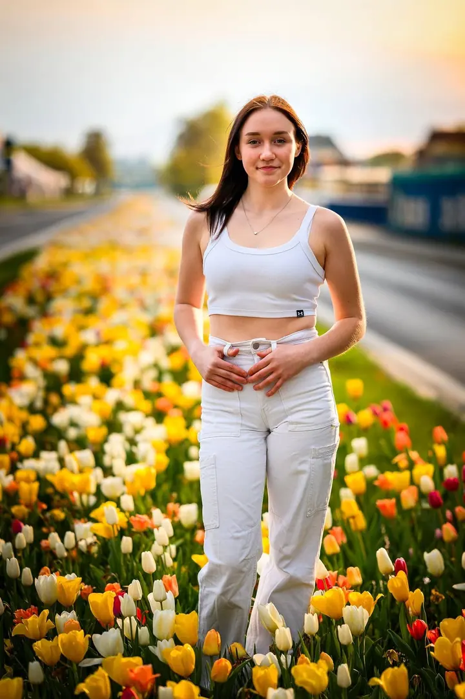
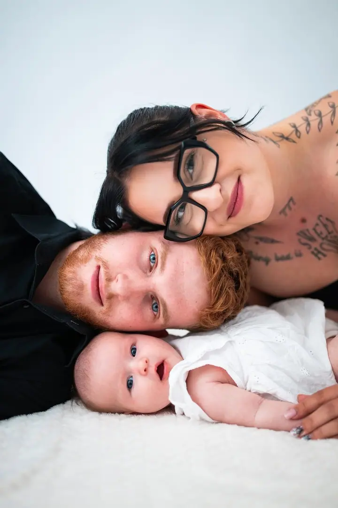
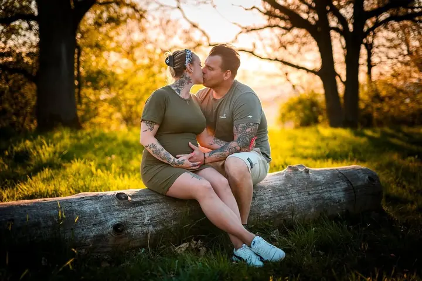

01 / 04
Portréty, páry a rodiny
Fotím venku, nejraději při západu slunce, a soustředím se na přirozené momentky a emoce místo strojených póz. Zhruba 45 minut focení a 8 upravených fotografií podle vašeho výběru za 1 500 Kč.
Zeptat se na termín→


Portréty a rodinné fotky ve zlaté hodince
Zeptat se na termín →(01) Ahoj
Jmenuji se Marek Mach a fotím portréty , rodiny s dětmi i páry , hlavně v Šumperku a okolí. Nejraději fotím při západu slunce, kdy je světlo nejjemnější. Strojeným pózám se vyhýbám, a když si nebudete vědět rady, rád vás jemně navedu.
363příspěvků s fotkami a příběhy
(02) Co fotím
01 / 04
Fotím venku, nejraději při západu slunce, a soustředím se na přirozené momentky a emoce místo strojených póz. Zhruba 45 minut focení a 8 upravených fotografií podle vašeho výběru za 1 500 Kč.
Zeptat se na termín→02 / 04
Miminka do jednoho měsíce fotím u vás doma, focení trvá asi hodinu a stojí 1 800 Kč. Těhotenské focení má stejný ceník jako portréty.
Zeptat se na termín→Dále nabízím
Svatbu fotím reportážním stylem od ranních příprav až do párty po setmění, kdy vytáhnu blesk. Zachytím vás, vaše hosty i drobnosti, které dělají váš den jedinečným.
↗Ples fotím 4–5 hodin a všechny fotografie dostanete v maximálním rozlišení, za 3 500 Kč. Za 4 500 Kč přivezu i fotokoutek s obsluhou a rekvizitami.
↗(04) Postup
Od první zprávy po hotovou galerii.
Krok 1 z 4
Napište mi nebo zavolejte. Volné a obsazené termíny najdete přímo na mém webu.
Krok 2 z 4
Doporučím vám oblečení, ideálně minimalistické kousky v bílé, šedé, béžové, hnědé nebo černé. Když se fotíte ve více lidech, sladěné outfity fotkám hodně pomůžou.
Krok 3 z 4
Přijďte alespoň 10 minut předem na domluvené místo. Fotíme hlavně ve zlaté hodince a soustředím se na přirozené momenty, ne na strojené pózy.
Krok 4 z 4
Platí se hned po focení, potom vám pošlu náhledy k výběru. Upravené fotografie dostanete zhruba do 4 týdnů.
Fotím, když je světlo nejjemnější.
(05) Za objektivem
K focení jsem přičuchl v roce 2011. Začínal jsem s lidmi a krajinou, později jsem přidal reportážní snímky, svatby a akce. Focení je pro mě koníček i práce, kterou mám rád.
Účastnil jsem se fotografických soutěží, několikrát se moje fotky dostaly do magazínu a roky jsem vedl fotografický kroužek. Dnes fotím rodiny, páry, těhotné, miminka, svatby i plesy a společenské akce v okolí Šumperka.
Na fotkách mám nejradši přirozené momentky a drobné detaily, které vás vrátí do té chvíle víc než jakýkoli strojený portrét. Proto se během focení snažím, abyste se cítili co nejpřirozeněji a pohodlně.
Marek
Marek Mach · Portrétní, rodinný a svatební fotograf
Focení trvá zhruba 45 minut a stojí 1 500 Kč. Jeho součástí je 8 upravených fotografií podle vašeho výběru, každá další je za 150 Kč.
Nejlepší jsou minimalistické kousky bez velkých nápisů a divokých vzorů. Barvy, které nikdy neudělají chybu, jsou bílá, šedá, béžová, hnědá a černá. Slečny si klidně vezměte dva nebo tři outfity.
Zhruba do 4 týdnů od focení, u svateb podle domluvy. Neupravené fotografie ani RAW soubory neposkytuji.
Ano, nabízím dárkový poukaz s platností jeden rok.
Ano, rád přijedu do vaší školy nebo školky. Fotíme venku a hotové fotografie odevzdávám do 14 dnů.
(07) Kontakt
Napište pár vět o tom, co si představujete, a termín, který se vám hodí.
info@marekmach.eu